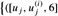
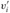

|
|
< Day Day Up > |
|
NP-complete problems arise in diverse domains: boolean logic, graphs, arithmetic, network design, sets and partitions, storage and retrieval, sequencing and scheduling, mathematical programming, algebra and number theory, games and puzzles, automata and language theory, program optimization, biology, chemistry, physics, and more. In this section, we shall use the reduction methodology to provide NP-completeness proofs for a variety of problems drawn from graph theory and set partitioning.
Figure 34.13 outlines the structure of the NP-completeness proofs in this section and Section 34.4. Each language in the figure is proved NP-complete by reduction from the language that points to it. At the root is CIRCUIT-SAT, which we proved NP-complete in Theorem 34.7.
A clique in an undirected graph G = (V, E) is a subset V' ⊆ V of vertices, each pair of which is connected by an edge in E. In other words, a clique is a complete subgraph of G. The size of a clique is the number of vertices it contains. The clique problem is the optimization problem of finding a clique of maximum size in a graph. As a decision problem, we ask simply whether a clique of a given size k exists in the graph. The formal definition is
CLIQUE = {〈G, k〉 : G is a graph with a clique of size k}.
A naive algorithm for determining whether a graph G = (V, E) with |V| vertices has a clique of size k is to list all k-subsets of V , and check each one to see whether it forms a clique. The running time of this algorithm is , which is polynomial if k is a constant. In general, however, k could be near |V| /2, in which case the algorithm runs in superpolynomial time. As one might suspect, an efficient algorithm for the clique problem is unlikely to exist. k
The clique problem is NP-complete.
Proof To show that CLIQUE NP, for a given graph G = (V, E), we use the set V' ⊆ V of vertices in the clique as a certificate for G. Checking whether V' is a clique can be accomplished in polynomial time by checking whether, for each pair u, v ∈ V', the edge (u, v) belongs to E.
We next prove that 3-CNF-SAT ≤P CLIQUE, which shows that the clique problem is NP-hard. That we should be able to prove this result is somewhat surprising, since on the surface logical formulas seem to have little to do with graphs.
The reduction algorithm begins with an instance of 3-CNF-SAT. Let φ = C1 ∧ C2 ∧ ··· ∧ Ck be a boolean formula in 3-CNF with k clauses. For r = 1, 2,..., k, each clause Cr has exactly three distinct literals , and . We shall construct a graph G such that φ is satisfiable if and only if G has a clique of size k.
The graph G = (V, E) is constructed as follows. For each clause in φ, we place a triple of vertices , , and into V. We put an edge between two vertices and if both of the following hold:
, and  and are in different triples, that is, r ≠ s, and
and are in different triples, that is, r ≠ s, and
their corresponding literals are consistent, that is, is not the negation of .
This graph can easily be computed from φ in polynomial time. As an example of this construction, if we have
φ = (x1 ∨ ¬x2 ∨ ¬x3) ∧ (¬x1 ∨ x2 ∨ x3) ∧ (x1 ∨ x2 ∨ x3),
then G is the graph shown in Figure 34.14.
We must show that this transformation of φ into G is a reduction. First, suppose that φ has a satisfying assignment. Then each clause Cr contains at least one literal that is assigned 1, and each such literal corresponds to a vertex . Picking one such "true" literal from each clause yields a set V' of k vertices. We claim that V' is a clique. For any two vertices , where r ≠ s, both corresponding literals and are mapped to 1 by the given satisfying assignment, and thus the literals cannot be complements. Thus, by the construction of G, the edge belongs to E.
Conversely, suppose that G has a clique V' of size k. No edges in G connect vertices in the same triple, and so V' contains exactly one vertex per triple. We can assign 1 to each literal such that without fear of assigning 1 to both a literal and its complement, since G contains no edges between inconsistent literals. Each clause is satisfied, and so φ is satisfied. (Any variables that do not correspond to a vertex in the clique may be set arbitrarily.)
In the example of Figure 34.14, a satisfying assignment of φ has x2 = 0 and x3 = 1. A corresponding clique of size k = 3 consists of the vertices corresponding to ¬x2 from the first clause, x3 from the second clause, and x3 from the third clause. Because the clique contains no vertices corresponding to either x1 or ¬x1, we can set x1 to either 0 or 1 in this satisfying assignment.
Observe that in the proof of Theorem 34.11, we reduced an arbitrary instance of 3-CNF-SAT to an instance of CLIQUE with a particular structure. It might seem that we have shown only that CLIQUE is NP-hard in graphs in which the vertices are restricted to occur in triples and in which there are no edges between vertices in the same triple. Indeed, we have shown that CLIQUE is NP-hard only in this restricted case, but this proof suffices to show that CLIQUE is NP-hard in general graphs. Why? If we had a polynomial-time algorithm that solved CLIQUE on general graphs, it would also solve CLIQUE on restricted graphs.
It would not have been sufficient, however, to reduce instances of 3-CNF-SAT with a special structure to general instances of CLIQUE. Why? It might have been the case that the instances of 3-CNF-SAT we chose to reduce from were "easy," and so we would not have reduced an NP-hard problem to CLIQUE.
Observe also that the reduction used the instance of 3-CNF-SAT but not the solution. It would have been a mistake for the polynomial-time reduction to have been based on knowing whether the formula φ is satisfiable, since we do not know how to determine this information in polynomial time.
A vertex cover of an undirected graph G = (V, E) is a subset V' ⊆ V such that if (u, v) ∈ E, then u ∈ V' or v ∈ V' (or both). That is, each vertex "covers" its incident edges, and a vertex cover for G is a set of vertices that covers all the edges in E. The size of a vertex cover is the number of vertices in it. For example, the graph in Figure 34.15(b) has a vertex cover {w, z} of size 2.
The vertex-cover problem is to find a vertex cover of minimum size in a given graph. Restating this optimization problem as a decision problem, we wish to determine whether a graph has a vertex cover of a given size k. As a language, we define
VERTEX-COVER = {〈G, k〉 : graph G has a vertex cover of size k}.
The following theorem shows that this problem is NP-complete.
The vertex-cover problem is NP-complete.
Proof We first show that VERTEX-COVER ∈ NP. Suppose we are given a graph G = (V, E) and an integer k. The certificate we choose is the vertex cover V' ⊆ V itself. The verification algorithm affirms that |V'| = k, and then it checks, for each edge (u, v) ∈ E, that u ∈ V' or v ∈ V'. This verification can be performed straightforwardly in polynomial time.
We prove that the vertex-cover problem is NP-hard by showing that CLIQUE ≤P VERTEX-COVER. This reduction is based on the notion of the "complement" of a graph. Given an undirected graph G = (V, E), we define the complement of G as , where , and (u, v) ∉ E}. In other words,  is the graph containing exactly those edges that are not in G. Figure 34.15 shows a graph and its complement and illustrates the reduction from CLIQUE to VERTEX-COVER.
is the graph containing exactly those edges that are not in G. Figure 34.15 shows a graph and its complement and illustrates the reduction from CLIQUE to VERTEX-COVER.
The reduction algorithm takes as input an instance 〈G, k〉 of the clique problem. It computes the complement  , which is easily done in polynomial time. The output of the reduction algorithm is the instance , of the vertex-cover problem. To complete the proof, we show that this transformation is indeed a reduction: the graph G has a clique of size k if and only if the graph has a vertex cover of size |V | - k.
, which is easily done in polynomial time. The output of the reduction algorithm is the instance , of the vertex-cover problem. To complete the proof, we show that this transformation is indeed a reduction: the graph G has a clique of size k if and only if the graph has a vertex cover of size |V | - k.
Suppose that G has a clique V' ⊆ V with |V'| = k. We claim that V - V' is a vertex cover in  . Let (u, v) be any edge in Ē. Then, (u, v) ∉ E, which implies that at least one of u or v does not belong to V', since every pair of vertices in V' is connected by an edge of E. Equivalently, at least one of u or v is in V - V', which means that edge (u, v) is covered by V - V'. Since (u, v) was chosen arbitrarily from Ē, every edge of Ē is covered by a vertex in V - V'. Hence, the set V - V', which has size |V | - k, forms a vertex cover for
. Let (u, v) be any edge in Ē. Then, (u, v) ∉ E, which implies that at least one of u or v does not belong to V', since every pair of vertices in V' is connected by an edge of E. Equivalently, at least one of u or v is in V - V', which means that edge (u, v) is covered by V - V'. Since (u, v) was chosen arbitrarily from Ē, every edge of Ē is covered by a vertex in V - V'. Hence, the set V - V', which has size |V | - k, forms a vertex cover for  .
.
Conversely, suppose that  has a vertex cover V' ⊆ V, where |V'| = |V| - k. Then, for all u, v ∈ V, if (u, v) ∈ Ē, then u ∈ V' or v ∈ V' or both. The contrapositive of this implication is that for all u, v ∈ V, if u ∉ V' and v ∉ V', then (u, v) E. In other words, V -V' is a clique, and it has size |V |-|V'| = k.
has a vertex cover V' ⊆ V, where |V'| = |V| - k. Then, for all u, v ∈ V, if (u, v) ∈ Ē, then u ∈ V' or v ∈ V' or both. The contrapositive of this implication is that for all u, v ∈ V, if u ∉ V' and v ∉ V', then (u, v) E. In other words, V -V' is a clique, and it has size |V |-|V'| = k.
Since VERTEX-COVER is NP-complete, we don't expect to find a polynomial-time algorithm for finding a minimum-size vertex cover. Section 35.1 presents a polynomial-time "approximation algorithm," however, which produces "approximate" solutions for the vertex-cover problem. The size of a vertex cover produced by the algorithm is at most twice the minimum size of a vertex cover.
Thus, we shouldn't give up hope just because a problem is NP-complete. There may be a polynomial-time approximation algorithm that obtains near-optimal solutions, even though finding an optimal solution is NP-complete. Chapter 35 gives several approximation algorithms for NP-complete problems.
We now return to the hamiltonian-cycle problem defined in Section 34.2.
The hamiltonian cycle problem is NP-complete.
Proof We first show that HAM-CYCLE belongs to NP. Given a graph G = (V, E), our certificate is the sequence of |V| vertices that makes up the hamiltonian cycle. The verification algorithm checks that this sequence contains each vertex in V exactly once and that with the first vertex repeated at the end, it forms a cycle in G. That is, it checks that there is an edge between each pair of consecutive vertices and between the first and last vertices. This verification can be performed in polynomial time.
We now prove that VERTEX-COVER ≤P HAM-CYCLE, which shows that HAM-CYCLE is NP-complete. Given an undirected graph G = (V, E) and an integer k, we construct an undirected graph G' = (V', E') that has a hamiltonian cycle if and only if G has a vertex cover of size k.
Our construction is based on a widget, which is a piece of a graph that enforces certain properties. Figure 34.16(a) shows the widget we use. For each edge (u, v) ∈ E, the graph G' that we construct will contain one copy of this widget,which we denote by Wuv. We denote each vertex in Wuv by [u, v, i] or [v, u, i], where 1 ≤ i ≤ 6, so that each widget Wuv contains 12 vertices. Widget Wuv also contains the 14 edges shown in Figure 34.16(a).
Along with the internal structure of the widget, we enforce the properties we want by limiting the connections between the widget and the remainder of the graph G' that we construct. In particular, only vertices [u, v, 1], [u, v, 6], [v, u, 1], and [v, u, 6] will have edges incident from outside Wuv. Any hamiltonian cycle of G' will have to traverse the edges of Wuv in one of the three ways shown in Figures 34.16(b)-(d). If the cycle enters through vertex [u, v, 1], it must exit through vertex [u, v, 6], and it either visits all 12 of the widget's vertices (Figure 34.16(b)) or the six vertices [u, v, 1] through [u, v, 6] (Figure 34.16(c)). In the latter case, the cycle will have to reenter the widget to visit vertices [v, u, 1] through [v, u, 6]. Similarly, if the cycle enters through vertex [v, u, 1], it must exit through vertex [v, u, 6], and it either visits all 12 of the widget's vertices (Figure 34.16(d)) or the six vertices [v, u, 1] through [v, u, 6] (Figure 34.16(c)). No other paths through the widget that visit all 12 vertices are possible. In particular, it is impossible to construct two vertex-disjoint paths, one of which connects [u, v, 1] to [v, u, 6] and the other of which connects [v, u, 1] to [u, v, 6], such that the union of the two paths contain all of the widget's vertices.
The only other vertices in V' other than those of widgets are selector vertices s1, s2,..., sk. We use edges incident on selector vertices in G' to select the k vertices of the cover in G.
In addition to the edges in widgets, there are two other types of edges in E', which Figure 34.17 shows. First, for each vertex u ∈ V, we add edges to join pairs of widgets in order to form a path containing all widgets corresponding to edges incident on u in G. We arbitrarily order the vertices adjacent to each vertex u ∈ V as u(1), u(2),..., u(degree(u)), where degree(u) is the number of vertices adjacent to u. We create a path in G' through all the widgets corresponding to edges incident on u by adding to E' the edges {([u, u(i), 6], [u, u(i+1), 1]) : 1 ≤ i ≤ degree(u) - 1}. In Figure 34.17, for example, we order the vertices adjacent to w as x, y, z, and so graph G' in part (b) of the figure includes the edges ([w, x, 6], [w, y, 1]) and ([w, y, 6], [w, z, 1]). For each vertex u ∈ V, these edges in G' fill in a path containing all widgets corresponding to edges incident on u in G.
The intuition behind these edges is that if we choose a vertex u ∈ V in the vertex cover of G, we can construct a path from [u, u(1), 1] to [u, u(degree(u)), 6] in G' that "covers" all widgets corresponding to edges incident on u. That is, for each of these widgets, say , the path either includes all 12 vertices (if u is in the vertex cover but u(i) is not) or just the six vertices [u, u(i), 1], [u, u(i), 2],..., [u, u(i), 6] (if both u and u(i) are in the vertex cover).
The final type of edge in E' joins the first vertex [u, u(1), 1] and the last vertex [u, u(degree(u)), 6] of each of these paths to each of the selector vertices. That is, we include the edges
{(sj, [u, u(1), 1]) : u ∈ V and 1 ≤ j ≤ k}
∪ {(sj, [u, u(degree(u)), 6]) : u ∈ V and 1 ≤ j ≤ k}.
Next, we show that the size of G' is polynomial in the size of G, and hence we can construct G' in time polynomial in the size of G. The vertices of G' are those in the widgets, plus the selector vertices. Each widget contains 12 vertices, and there are k ≤ |V| selector vertices, for a total of
|
|V'| |
= |
12 |E| + k |
|
≤ |
12 |E| + |V| |
vertices. The edges of G' are those in the widgets, those that go between widgets, and those connecting selector vertices to widgets. There are 14 edges in each widget, or 14 |E| in all widgets. For each vertex u ∈ V, there are degree(u) - 1 edges between widgets, so that summed over all vertices in V, there are
edges between widgets. Finally, there are two edges for each pair consisting of a selector vertex and a vertex of V, or 2k |V| such edges. The total number of edges of G' is therefore
|
|E'| |
= |
(14 |E|) + (2 |E| - |V|) + (2k|V|) |
|
= |
16 |E| + (2k - 1)|V| |
|
|
≤ |
16 |E| + (2 |V| - 1)|V|. |
Now we show that the transformation from graph G to G' is a reduction. That is, we must show that G has a vertex cover of size k if and only if G' has a hamiltonian cycle.
Suppose that G = (V, E) has a vertex cover V* ⊆ V of size k. Let V* = {u1, u2,..., uk}. As Figure 34.17 shows, we form a hamiltonian cycle in G by including the following edges[8] for each vertex uj ∈ V*. Include edges , degree(uj), which connect all widgets corresponding to edges incident on uj. We also include the edges within these widgets as Figures 34.16(b)-(d) show, depending on whether the edge is covered by one or two vertices in V*. The hamiltonian cycle also includes the edges
By inspecting Figure 34.17, the reader can verify that these edges form a cycle. The cycle starts at s1, visits all widgets corresponding to edges incident on u1, then visits s2, visits all widgets corresponding to edges incident on u2, and so on, until it returns to s1. Each widget is visited either once or twice, depending on whether one or two vertices of V* cover its corresponding edge. Because V* is a vertex cover for G, each edge in E is incident on some vertex in V*, and so the cycle visits each vertex in each widget of G'. Because the cycle also visits every selector vertex, it is hamiltonian.
Conversely, suppose that G' = (V', E') has a hamiltonian cycle C ⊆ E'. We claim that the set
is a vertex cover for G. To see why, partition C into maximal paths that start at some selector vertex si, traverse an edge (si, [u, u(1), 1]) for some u ∈ V, and end at a selector vertex sj without passing through any other selector vertex. Let us call each such path a "cover path." From how G' is constructed, each cover path must start at some si, take the edge (si, [u, u(1), 1]) for some vertex u ∈ V, pass through all the widgets corresponding to edges in E incident on u, and then end at some selector vertex sj. We refer to this cover path as pu, and by equation (34.4), we put u into V*. Each widget visited by pu must be Wuv or Wvu for some v ∈ V. For each widget visited by pu, its vertices are visited by either one or two cover paths. If they are visited by one cover path, then edge (u, v) ∈ E is covered in G by vertex u. If two cover paths visit the widget, then the other cover path must be pv, which implies that v ∈ V*, and edge (u, v) ∈ E is covered by both u and v. Because each vertex in each widget is visited by some cover path, we see that each edge in E is covered by some vertex in V*.
In the traveling-salesman problem, which is closely related to the hamiltonian-cycle problem, a salesman must visit n cities. Modeling the problem as a complete graph with n vertices, we can say that the salesman wishes to make a tour, or hamiltonian cycle, visiting each city exactly once and finishing at the city he starts from. There is an integer cost c(i, j) to travel from city i to city j, and the salesman wishes to make the tour whose total cost is minimum, where the total cost is the sum of the individual costs along the edges of the tour. For example, in Figure 34.18, a minimum-cost tour is 〈u, w, v, x, u〉, with cost 7. The formal language for the corresponding decision problem is
TSP = {〈G, c, k〉 : G = (V, E) is a complete graph, c is a function from V × V → Z, k ∈ Z, and G has a traveling-salesman tour with cost at most k}.
The following theorem shows that a fast algorithm for the traveling-salesman problem is unlikely to exist.
The traveling-salesman problem is NP-complete.
Proof We first show that TSP belongs to NP. Given an instance of the problem, we use as a certificate the sequence of n vertices in the tour. The verification algorithm checks that this sequence contains each vertex exactly once, sums up the edge costs, and checks whether the sum is at most k. This process can certainly be done in polynomial time.
To prove that TSP is NP-hard, we show that HAM-CYCLE ≤P TSP. Let G = (V, E) be an instance of HAM-CYCLE. We construct an instance of TSP as follows. We form the complete graph G' = (V, E'), where E' = {(i, j) : i, j ∈ V and i ≠ j}, and we define the cost function c by
(Note that because G is undirected, it has no self-loops, and so c(v, v) = 1 for all vertices v ∈ V.) The instance of TSP is then (G', c, 0), which is easily formed in polynomial time.
We now show that graph G has a hamiltonian cycle if and only if graph G' has a tour of cost at most 0. Suppose that graph G has a hamiltonian cycle h. Each edge in h belongs to E and thus has cost 0 in G'. Thus, h is a tour in G' with cost 0. Conversely, suppose that graph G' has a tour h' of cost at most 0. Since the costs of the edges in E' are 0 and 1, the cost of tour h' is exactly 0 and each edge on the tour must have cost 0. Therefore, h' contains only edges in E. We conclude that h' is a hamiltonian cycle in graph G.
The next NP-complete problem we consider is an arithmetic one. In the subset-sum problem, we are given a finite set S ⊂ N and a target t ∈ N. We ask whether there is a subset S' ⊆ S whose elements sum to t. For example, if S = {1, 2, 7, 14, 49, 98, 343, 686, 2409, 2793, 16808, 17206, 117705, 117993} and t = 138457, then the subset S' = {1, 2, 7, 98, 343, 686, 2409, 17206, 117705} is a solution.
As usual, we define the problem as a language:
SUBSET-SUM = {〈S, t〉 : there exists a subset S ⊆ S such that t = Σs∈S' S}.
As with any arithmetic problem, it is important to recall that our standard encoding assumes that the input integers are coded in binary. With this assumption in mind, we can show that the subset-sum problem is unlikely to have a fast algorithm.
The subset-sum problem is NP-complete.
Proof To show that SUBSET-SUM is in NP, for an instance 〈S, t〉 of the problem, we let the subset S' be the certificate. Checking whether t = Σs∈S' S can be accomplished by a verification algorithm in polynomial time.
We now show that 3-CNF-SAT ≤P SUBSET-SUM. Given a 3-CNF formula φ over variables x1, x2,..., xn with clauses C1, C2,..., Ck, each containing exactly three distinct literals, the reduction algorithm constructs an instance 〈S, t〉 of the subset-sum problem such that φ is satisfiable if and only if there is a subset of S whose sum is exactly t. Without loss of generality, we make two simplifying assumptions about the formula φ. First, no clause contains both a variable and its negation, for such a clause is automatically satisfied by any assignment of values to the variables. Second, each variable appears in at least one clause, for otherwise it does not matter what value is assigned to the variable.
The reduction creates two numbers in set S for each variable xi and two numbers in S for each clause Cj. We shall create numbers in base 10, where each number contains n +k digits and each digit corresponds to either one variable or one clause. Base 10 (and other bases, as we shall see) has the property we need of preventing carries from lower digits to higher digits.
As Figure 34.19 shows, we construct set S and target t as follows. We label each digit position by either a variable or a clause. The least significant k digits are labeled by the clauses, and the most significant n digits are labeled by variables.
The target t has a 1 in each digit labeled by a variable and a 4 in each digit labeled by a clause.
For each variable xi, there are two integers, vi and  , in S. Each has a 1 in the digit labeled by xi and 0's in the other variable digits. If literal xi appears in clause Cj, then the digit labeled by Cj in vi contains a 1. If literal ¬xi appears in clause Cj, then the digit labeled by Cj in
, in S. Each has a 1 in the digit labeled by xi and 0's in the other variable digits. If literal xi appears in clause Cj, then the digit labeled by Cj in vi contains a 1. If literal ¬xi appears in clause Cj, then the digit labeled by Cj in  contains a 1. All other digits labeled by clauses in vi and
contains a 1. All other digits labeled by clauses in vi and  are 0.
are 0.
All vi and  values in set S are unique. Why? For l ≠ i, no vl or values can equal vi and
values in set S are unique. Why? For l ≠ i, no vl or values can equal vi and  in the most significant n digits. Furthermore, by our simplifying assumptions above, no vi and
in the most significant n digits. Furthermore, by our simplifying assumptions above, no vi and  can be equal in all k least significant digits. If vi and were equal, then xi and ¬xi would have to appear in exactly the same set of clauses. But we assume that no clause contains both xi and ¬xi and that either xi or ¬xi appears in some clause, and so there must be some clause Cj for which vi and
can be equal in all k least significant digits. If vi and were equal, then xi and ¬xi would have to appear in exactly the same set of clauses. But we assume that no clause contains both xi and ¬xi and that either xi or ¬xi appears in some clause, and so there must be some clause Cj for which vi and  differ.
differ.
For each clause Cj, there are two integers, sj and  in S. Each has 0's in all digits other than the one labeled by Cj. For sj, there is a 1 in the Cj digit, and
in S. Each has 0's in all digits other than the one labeled by Cj. For sj, there is a 1 in the Cj digit, and  has a 2 in this digit. These integers are "slack variables," which we use to get each clause-labeled digit position to add to the target value of 4.
has a 2 in this digit. These integers are "slack variables," which we use to get each clause-labeled digit position to add to the target value of 4.
Simple inspection of Figure 34.19 demonstrates that all sj and  values in S are unique in set S.
values in S are unique in set S.
Figure 34.19: The reduction of 3-CNF-SAT to SUBSET-SUM. The formula in 3-CNF is φ = C1 ∧ C2 ∧ C3 ∧ C4, where C1 = (x1 ∨ ¬x2 ∨¬x3), C2 = (¬x1 ∨¬x2 ∨¬x3), C3 = (¬x1 ∨¬x2 ∨x3), and C4 = (x1 x2 x3). A satisfying assignment of φ is 〈x1 = 0, x2 = 0, x3 = 1〉. The set S produced by the reduction consists of the base-10 numbers shown; reading from top to bottom, S = {1001001, 1000110, 100001, 101110, 10011, 11100, 1000, 2000, 100, 200, 10, 20, 1, 2}. The target t is 1114444. The subset S' ⊆ S is lightly shaded, and it contains  , and , corresponding to the satisfying assignment. It also contains slack variables
, and , corresponding to the satisfying assignment. It also contains slack variables  , and to achieve the target value of 4 in the digits labeled by C1 through C4.
, and to achieve the target value of 4 in the digits labeled by C1 through C4.
Note that the greatest sum of digits in any one digit position is 6, which occurs in the digits labeled by clauses (three 1's from the vi and values, plus 1 and 2 from the sj and values). Interpreting these numbers in base 10, therefore, no carries can occur from lower digits to higher digits.[9]
The reduction can be performed in polynomial time. The set S contains 2n + 2k values, each of which has n + k digits, and the time to produce each digit is poly-nomial in n + k. The target t has n + k digits, and the reduction produces each in constant time.
We now show that the 3-CNF formula φ is satisfiable if and only if there is a subset S ⊆ S whose sum is t. First, suppose that φ has a satisfying assignment. For i = 1, 2,..., n, if xi = 1 in this assignment, then include vi in S'. Otherwise, include . In other words, we include in S' exactly the vi and values that correspond to literals with the value 1 in the satisfying assignment. Having included either vi or , but not both, for all i, and having put 0 in the digits labeled by variables in all sj and , we see that for each variable-labeled digit, the sum of the values of S' must be 1, which matches those digits of the target t. Because each clause is satisfied, there is some literal in the clause with the value 1. Therefore, each digit labeled by a clause has at least one 1 contributed to its sum by a vi or value in S'. In fact, 1, 2, or 3 literals may be 1 in each clause, and so each clause-labeled digit has a sum of 1, 2, or 3 from the vi and values in S'. (In Figure 34.19 for example, literals ¬x1, ¬x2, and x3 have the value 1 in a satisfying assignment. Each of clauses C1 and C4 contain exactly one of these literals, and so together  , and v3 contribute 1 to the sum in the digits for C1 and C4. Clause C2 contains two of these literals, and , and v3 contribute 2 to the sum in the digit for C2. Clause C3 contains all three of these literals, and
, and v3 contribute 1 to the sum in the digits for C1 and C4. Clause C2 contains two of these literals, and , and v3 contribute 2 to the sum in the digit for C2. Clause C3 contains all three of these literals, and  , and v3 contribute 3 to the sum in the digit for C3.) We achieve the target of 4 in each digit labeled by clause Cj by including in S' the appropriate nonempty subset of slack variables {sj , }. (In Figure 34.19, S' includes and .) Since we have matched the target in all digits of the sum, and no carries can occur, the values of S' sum to t.x
, and v3 contribute 3 to the sum in the digit for C3.) We achieve the target of 4 in each digit labeled by clause Cj by including in S' the appropriate nonempty subset of slack variables {sj , }. (In Figure 34.19, S' includes and .) Since we have matched the target in all digits of the sum, and no carries can occur, the values of S' sum to t.x
Now, suppose that there is a subset S' ⊆ S that sums to t. The subset S' must include exactly one of vi and  for each i = 1, 2,..., n, for otherwise the digits labeled by variables would not sum to 1. If vi ∈ S', we set xi = 1. Otherwise, ∈ S', and we set xi = 0. We claim that every clause Cj, for j = 1, 2,..., k, is satisfied by this assignment. To prove this claim, note that to achieve a sum of 4 in the digit labeled by Cj, the subset S' must include at least one vi or value that has a 1 in the digit labeled by Cj, since the contributions of the slack variables sj and together sum to at most 3. If S' includes a vi that has a 1 in that position, then the literal xi appears in clause Cj. Since we have set xi = 1 when vi ∈ S', clause Cj is satisfied. If S' includes a that has a 1 in that position, then the literal ¬xi appears in Cj. Since we have set xi = 0 when ∈ S', clause Cj is again satisfied. Thus, all clauses of φ are satisfied, which completes the proof.
The subgraph-isomorphism problem takes two graphs G1 and G2 and asks whether G1 is isomorphic to a subgraph of G2. Show that the subgraph-isomorphism problem is NP-complete.
Given an integer m-by-n matrix A and an integer m-vector b, the 0-1 integer-programming problem asks whether there is an integer n-vector x with elements in the set {0, 1} such that Ax ≤ b. Prove that 0-1 integer programming is NP-complete. (Hint: Reduce from 3-CNF-SAT.)
The integer linear-programming problem is like the 0-1 integer-programming problem given in Exercise 34.5-2, except that the values of the vector x may be any integers rather than just 0 or 1. Assuming that the 0-1 integer-programming problem is NP-hard, show that the integer linear-programming problem is NP-complete.
Show that the subset-sum problem is solvable in polynomial time if the target value t is expressed in unary.
The set-partition problem takes as input a set S of numbers. The question is whether the numbers can be partitioned into two sets A and Ā = S - A such that Σx∈Āx. Show that the set-partition problem is NP-complete.
The longest-simple-cycle problem is the problem of determining a simple cycle (no repeated vertices) of maximum length in a graph. Show that this problem is NP-complete.
In the half 3-CNF satisfiability problem, we are given a 3-CNF formula φ with n variables and m clauses, where m is even. We wish to determine whether there exists a truth assignment to the variables of φ such that exactly half the clauses evaluate to 0 and exactly half the clauses evaluate to 1. Prove that the half 3-CNF satisfiability problem is NP-complete.
An independent set of a graph G = (V, E) is a subset V' ⊇ V of vertices such that each edge in E is incident on at most one vertex in V'. The independent-set problem is to find a maximum-size independent set in G.
Formulate a related decision problem for the independent-set problem, and prove that it is NP-complete. (Hint: Reduce from the clique problem.)
Suppose that you are given a "black-box" subroutine to solve the decision problem you defined in part (a). Give an algorithm to find an independent set of maximum size. The running time of your algorithm should be polynomial in |V| and |E|, where queries to the black box are counted as a single step.
Although the independent-set decision problem is NP-complete, certain special cases are polynomial-time solvable.
Give an efficient algorithm to solve the independent-set problem when each vertex in G has degree 2. Analyze the running time, and prove that your algorithm works correctly.
Give an efficient algorithm to solve the independent-set problem when G is bipartite. Analyze the running time, and prove that your algorithm works correctly. (Hint: Use the results of Section 26.3.)
Bonnie and Clyde have just robbed a bank. They have a bag of money and want to divide it up. For each of the following scenarios, either give a polynomial-time algorithm, or prove that the problem is NP-complete. The input in each case is a list of the n items in the bag, along with the value of each.
There are n coins, but only 2 different denominations: some coins are worth x dollars, and some are worth y dollars. They wish to divide the money exactly evenly.
There are n coins, with an arbitrary number of different denominations, but each denomination is a nonnegative integer power of 2, i.e., the possible denominations are 1 dollar, 2 dollars, 4 dollars, etc. They wish to divide the money exactly evenly.
There are n checks, which are, in an amazing coincidence, made out to "Bonnie or Clyde." They wish to divide the checks so that they each get the exact same amount of money.
There are n checks as in part (c), but this time they are willing to accept a split in which the difference is no larger than 100 dollars.
A k-coloring of an undirected graph G = (V, E) is a function c : V → {1, 2,..., k} such that c(u) ≠ c(v) for every edge (u, v) ∈ E. In other words, the numbers 1, 2,..., k represent the k colors, and adjacent vertices must have different colors. The graph-coloring problem is to determine the minimum number of colors needed to color a given graph.
Give an efficient algorithm to determine a 2-coloring of a graph if one exists.
Cast the graph-coloring problem as a decision problem. Show that your decision problem is solvable in polynomial time if and only if the graph-coloring problem is solvable in polynomial time.
Let the language 3-COLOR be the set of graphs that can be 3-colored. Show that if 3-COLOR is NP-complete, then your decision problem from part (b) is NP-complete.
To prove that 3-COLOR is NP-complete, we use a reduction from 3-CNF-SAT. Given a formula φ of m clauses on n variables x1, x2,..., xn, we construct a graph G = (V, E) as follows. The set V consists of a vertex for each variable, a vertex for the negation of each variable, 5 vertices for each clause, and 3 special vertices: TRUE, FALSE, and RED. The edges of the graph are of two types: "literal" edges that are independent of the clauses and "clause" edges that depend on the clauses. The literal edges form a triangle on the special vertices and also form a triangle on xi, ¬xi, and RED for i = 1, 2,..., n.
Argue that in any 3-coloring c of a graph containing the literal edges, exactly one of a variable and its negation is colored c(TRUE) and the other is colored c(FALSE). Argue that for any truth assignment for φ, there is a 3-coloring of the graph containing just the literal edges.
The widget shown in Figure 34.20 is used to enforce the condition corresponding to a clause (x ∨ y ∨ z). Each clause requires a unique copy of the 5 vertices that are heavily shaded in the figure; they connect as shown to the literals of the clause and the special vertex TRUE.
Argue that if each of x, y, and z is colored c(TRUE) or c(FALSE), then the widget is 3-colorable if and only if at least one of x, y, or z is colored c(TRUE).
Complete the proof that 3-COLOR is NP-complete.
Suppose you have one machine and a set of n tasks a1, a2,..., an. Each task aj has a processing time tj, a profit pj, and a deadline dj. The machine can process only one task at a time, and task aj must run uninterruptedly for tj consecutive time units. If you complete task aj by its deadline dj, you receive a profit pj, but if you complete it after its deadline, you receive no profit. As an optimization problem, you are given the processing times, profits, and deadlines for a set of n tasks, and you wish to find a schedule that completes all the tasks and returns the greatest amount of profit.
State this problem as a decision problem.
Show that the decision problem is NP-complete.
Give a polynomial-time algorithm for the decision problem, assuming that all processing times are integers from 1 to n. (Hint: Use dynamic programming.)
Give a polyomial-time algorithm for the optimization problem, assuming that all processing times are integers from 1 to n.
[8]Technically, we define a cycle in terms of vertices rather than edges (see Section B.4). In the interest of clarity, we abuse notation here and define the hamiltonian cycle in terms of edges.
[9]In fact, any base b, where b ≥ 7, would work. The instance at the beginning of this subsection is the set S and target t in Figure 34.19 interpreted in base 7, with S listed in sorted order.
|
|
< Day Day Up > |
|